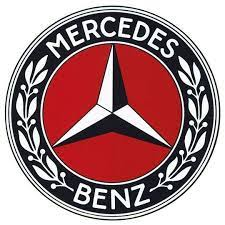
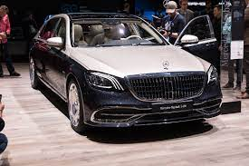
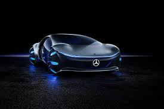
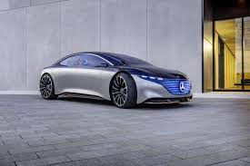
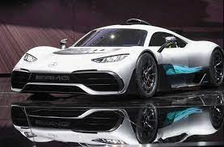
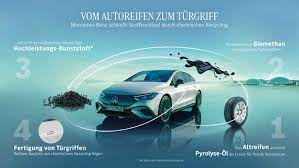

Name: Mercedes-Benz
Gründungsjahr 1926
Hauptsitz Stuttgart, Deutschland
Branche Automobilindustrie
CEO Ola Källenius
Mercedes-Benz, eine der renommiertesten und traditionsreichsten Automobilmarken der Welt, hat ihre Wurzeln in der Daimler-Motoren-Gesellschaft, die 1926 mit Benz & Cie. zur Daimler-Benz AG fusionierte. Das Unternehmen steht für Luxus, Innovation und technische Exzellenz in der Automobilindustrie.
Mercedes-Benz bietet eine breite Palette von Fahrzeugen an, darunter Limousinen, SUVs, Coupés, Cabrios, Roadster, Kombis und Nutzfahrzeuge. Die Marke ist bekannt für ihre hochwertigen Fahrzeuge, die technologische Innovation mit elegantem Design vereinen.
Mercedes-Benz steht an vorderster Front in Bezug auf technologische Innovationen in der Automobilbranche. Das Unternehmen hat zahlreiche wegweisende Technologien eingeführt, darunter Sicherheitsmerkmale wie Airbags, Antischlupfregelung (ASR) und elektronische Stabilitätskontrolle (ESP).
Mercedes-Benz hat einen starken Fokus auf Elektromobilität und arbeitet intensiv an der Entwicklung von Elektrofahrzeugen. Die EQ-Familie von Elektroautos und Plug-in-Hybriden zeigt das Engagement des Unternehmens für nachhaltige Mobilität.
Mercedes-Benz hat eine beeindruckende Geschichte im Motorsport, sowohl in der Formel 1 als auch in anderen Disziplinen. Mit ihrem Werksteam, Mercedes-AMG Petronas Formula One Team, hat die Marke zahlreiche Titel gewonnen und ihre Innovationskraft im Rennsport unter Beweis gestellt.
Das Unternehmen setzt sich für Nachhaltigkeit ein und hat sich das Ziel gesetzt, bis 2039 komplett klimaneutral zu sein. Dies spiegelt sich in Initiativen wie der Produktion von Elektrofahrzeugen und der verstärkten Nutzung erneuerbarer Energien in den Produktionsprozessen wider.
